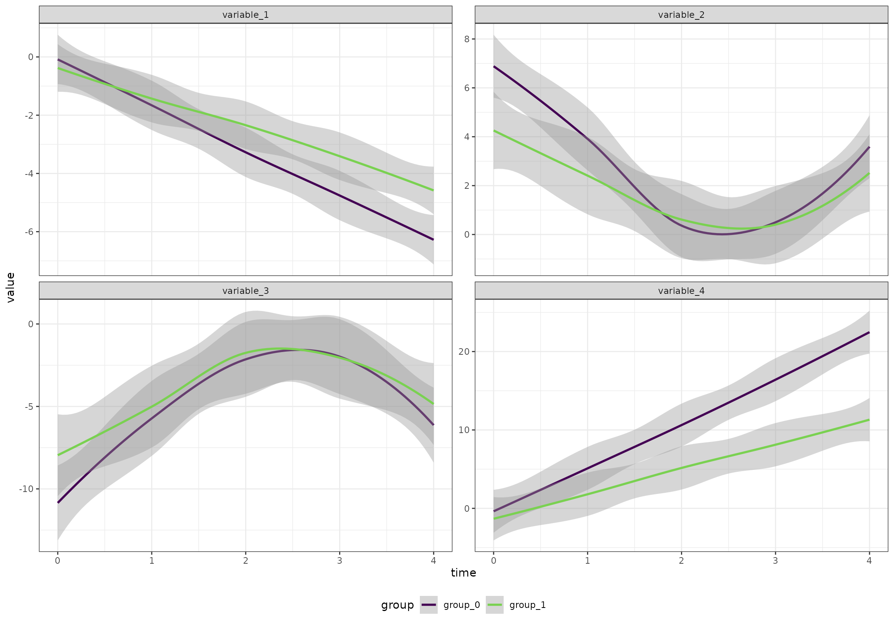
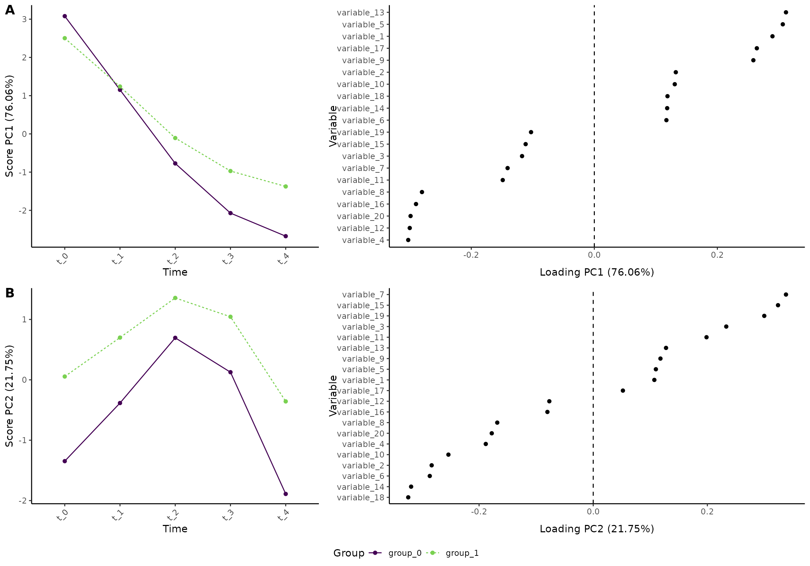
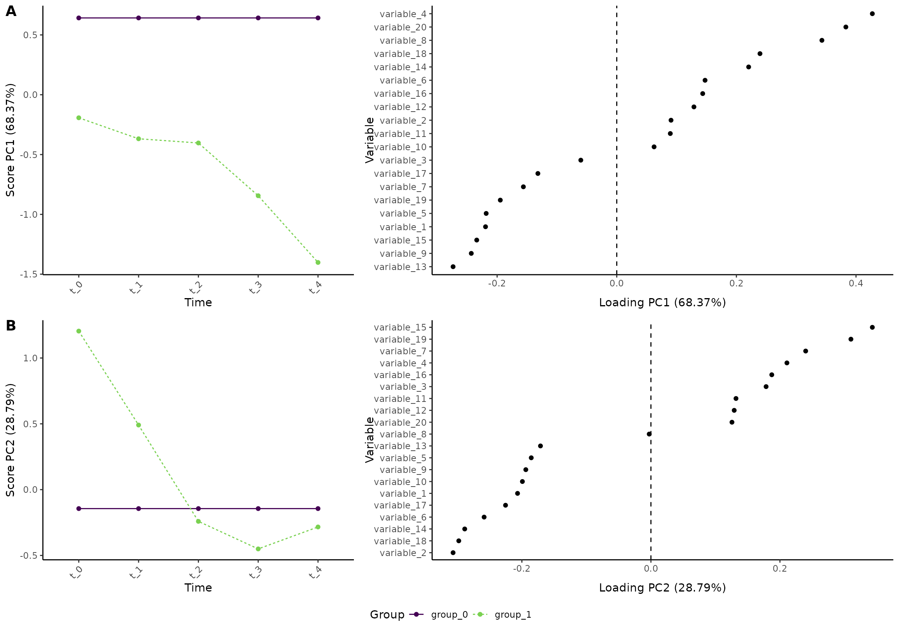
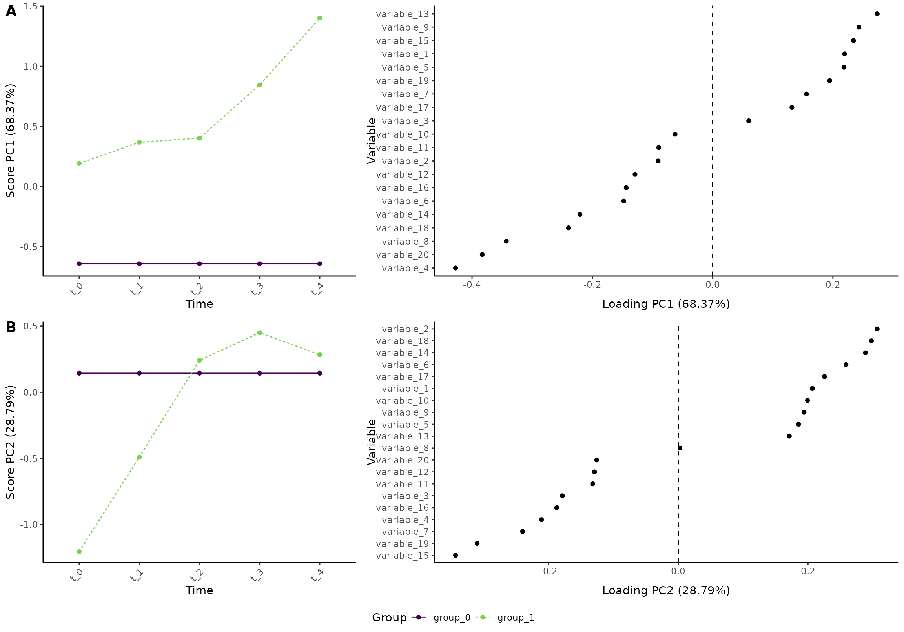
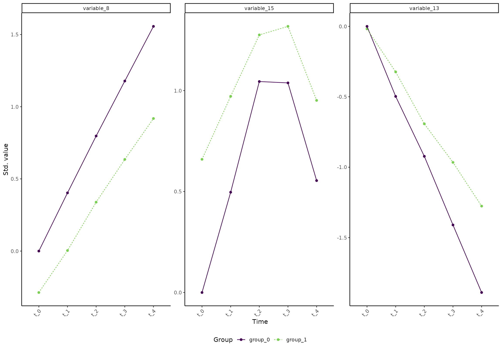
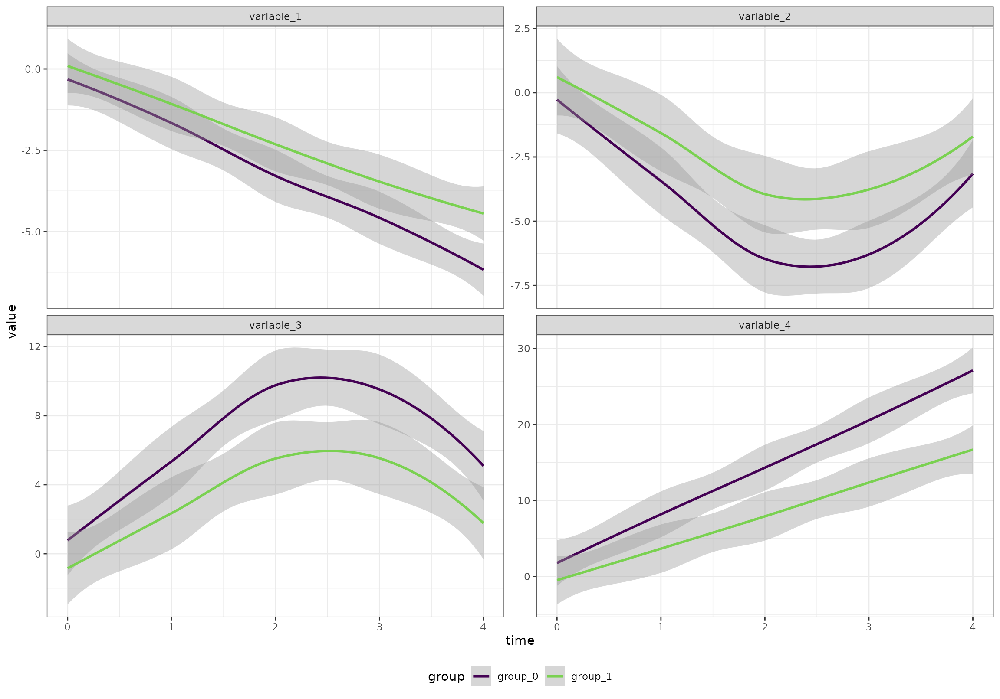
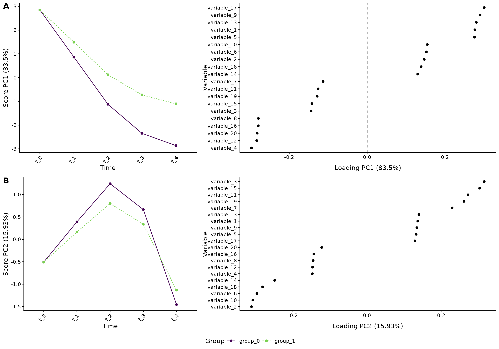

vignettes/articles/regression.Rmd
regression.RmdPlease note: We do not comment on scaling in this vignette. For details, see our paper ALASCA: An R package for longitudinal and cross-sectional analysis of multivariate data by ASCA-based methods.
We will start by creating an artificial data set with 100 participants, 5 time points, 2 groups, and 20 variables. The variables follow four patterns
The two groups are different at baseline and one of the groups have larger changes throughout the study.
n_time <- 5
n_id <- 100
n_variable <- 20
df <- rbindlist(lapply(seq(1,n_id), function(i_id) {
rbindlist(lapply(seq(1,n_variable), function(i_variable) {
r_intercept <- rnorm(1, sd = 5)
i_group <- i_id %% 2
if (i_group == 1) {
beta <- 2 + rnorm(1)
} else {
beta <- 3 + rnorm(1)
}
temp_data <- data.table(
id = paste0("id_", i_id),
group = paste0("group_", i_group),
time = seq(1, n_time) - 1,
variable = paste0("variable_", i_variable)
)
if ((i_variable %% 4) == 0) {
temp_data[, value := r_intercept + beta * time]
} else if ((i_variable %% 4) == 1) {
temp_data[, value := r_intercept - beta * time]
} else if ((i_variable %% 4) == 2) {
temp_data[, value := r_intercept + beta * abs(time - n_time/2)]
} else {
temp_data[, value := r_intercept - beta * abs(time - n_time/2)]
}
temp_data[, value := value + rnorm(n_time)]
temp_data[, value := value * i_variable/2]
temp_data
}))
}))Overall (ignoring the random effects), the four patterns look like this:
ggplot(df[variable %in% c("variable_1", "variable_2", "variable_3", "variable_4"),],
aes(time, value, color = group)) +
geom_smooth() +
facet_wrap(~variable, scales = "free_y") +
scale_color_viridis_d(end = 0.8)
#> `geom_smooth()` using method = 'loess' and formula = 'y ~ x'
We want time to be a categorical variable:
df[, time := paste0("t_", time)]With ALASCA, you can either assess how the two groups develop
overall, or you can focus your analyses on how they diverge (see below).
In R, you commonly specify your regression equation as
value ~ v1*v2 + (1|v3) where value is outcome,
v1 and v2 are predictors, and v3
defines the random intercept. v1*v2 is shorthand for
v1 + v1:v2 + v2, that is, the main effects of
v1, v2, and their interaction
v1:v2. You can, of course, also write
v1 + v1:v2 + v2 - this will become important when you do
not want the main effect of v2 (see randomized
trial below).
res <- ALASCA(
df,
value ~ time*group + (1|id)
)
#> INFO [2024-07-15 10:21:00] Initializing ALASCA (v1.0.16, 2024-02-15)
#> WARN [2024-07-15 10:21:00] Guessing effects: `time+time:group+group`
#> INFO [2024-07-15 10:21:00] Will use linear mixed models!
#> INFO [2024-07-15 10:21:00] Will use Rfast!
#> WARN [2024-07-15 10:21:00] The `group` column is used for stratification
#> WARN [2024-07-15 10:21:00] Converting `character` columns to factors
#> INFO [2024-07-15 10:21:00] Scaling data with sdall ...
#> INFO [2024-07-15 10:21:00] Calculating LMM coefficients
#> INFO [2024-07-15 10:21:00] ==== ALASCA has finished ====
#> INFO [2024-07-15 10:21:00] To visualize the model, try `plot(<object>, effect = 1, component = 1, type = 'effect')`
plot(res, component = c(1,2), type = 'effect')
#> INFO [2024-07-15 10:21:00] Effect plot. Selected effect (nr 1): `time+time:group+group`. Component: 1 and 2.
The regression coefficients can be fetched with:
res$regression_coefficients
#> variable covar estimate pvalue
#> <char> <char> <num> <lgcl>
#> 1: (Intercept) variable_1 -0.02424694 NA
#> 2: timet_1 variable_1 -0.44769975 NA
#> 3: timet_2 variable_1 -0.90615208 NA
#> 4: timet_3 variable_1 -1.32768478 NA
#> 5: timet_4 variable_1 -1.75964143 NA
#> ---
#> 196: groupgroup_1 variable_9 -0.05143755 NA
#> 197: timet_1:groupgroup_1 variable_9 0.13396188 NA
#> 198: timet_2:groupgroup_1 variable_9 0.33100413 NA
#> 199: timet_3:groupgroup_1 variable_9 0.41887184 NA
#> 200: timet_4:groupgroup_1 variable_9 0.61557106 NAP-values are not available when you use hte Rfast package. If you choose to use the lme4 package instead, p-values will be estimated with the lmerTest package:
res <- ALASCA(
df,
value ~ time*group + (1|id),
use_Rfast = FALSE
)
#> INFO [2024-07-15 10:21:02] Initializing ALASCA (v1.0.16, 2024-02-15)
#> WARN [2024-07-15 10:21:02] Guessing effects: `time+time:group+group`
#> INFO [2024-07-15 10:21:02] Will use linear mixed models!
#> WARN [2024-07-15 10:21:02] The `group` column is used for stratification
#> WARN [2024-07-15 10:21:02] Converting `character` columns to factors
#> INFO [2024-07-15 10:21:02] Scaling data with sdall ...
#> INFO [2024-07-15 10:21:02] Calculating LMM coefficients
#> fixed-effect model matrix is rank deficient so dropping 1 column / coefficient
#> fixed-effect model matrix is rank deficient so dropping 1 column / coefficient
#> fixed-effect model matrix is rank deficient so dropping 1 column / coefficient
#> fixed-effect model matrix is rank deficient so dropping 1 column / coefficient
#> fixed-effect model matrix is rank deficient so dropping 1 column / coefficient
#> fixed-effect model matrix is rank deficient so dropping 1 column / coefficient
#> fixed-effect model matrix is rank deficient so dropping 1 column / coefficient
#> fixed-effect model matrix is rank deficient so dropping 1 column / coefficient
#> fixed-effect model matrix is rank deficient so dropping 1 column / coefficient
#> fixed-effect model matrix is rank deficient so dropping 1 column / coefficient
#> fixed-effect model matrix is rank deficient so dropping 1 column / coefficient
#> fixed-effect model matrix is rank deficient so dropping 1 column / coefficient
#> fixed-effect model matrix is rank deficient so dropping 1 column / coefficient
#> fixed-effect model matrix is rank deficient so dropping 1 column / coefficient
#> fixed-effect model matrix is rank deficient so dropping 1 column / coefficient
#> fixed-effect model matrix is rank deficient so dropping 1 column / coefficient
#> fixed-effect model matrix is rank deficient so dropping 1 column / coefficient
#> fixed-effect model matrix is rank deficient so dropping 1 column / coefficient
#> fixed-effect model matrix is rank deficient so dropping 1 column / coefficient
#> fixed-effect model matrix is rank deficient so dropping 1 column / coefficient
#> INFO [2024-07-15 10:21:03] ==== ALASCA has finished ====
#> INFO [2024-07-15 10:21:03] To visualize the model, try `plot(<object>, effect = 1, component = 1, type = 'effect')`
res$regression_coefficients
#> estimate pvalue covar variable
#> <num> <num> <char> <char>
#> 1: -0.02424694 8.401427e-01 variable_1 (Intercept)
#> 2: -0.44769975 1.238382e-15 variable_1 timet_1
#> 3: -0.90615208 1.779872e-48 variable_1 timet_2
#> 4: -1.32768478 4.240143e-82 variable_1 timet_3
#> 5: -1.75964143 2.000954e-114 variable_1 timet_4
#> ---
#> 196: -0.05143755 7.707747e-01 variable_9 groupgroup_1
#> 197: 0.13396188 8.168277e-02 variable_9 timet_1:groupgroup_1
#> 198: 0.33100413 2.041440e-05 variable_9 timet_2:groupgroup_1
#> 199: 0.41887184 8.565824e-08 variable_9 timet_3:groupgroup_1
#> 200: 0.61557106 1.227176e-14 variable_9 timet_4:groupgroup_1You can also specify a method to adjust for multiple testing (by
default, unadjusted p-values are provided). Here, Benjamini-Hochberg is
used (alternative:
c("holm", "hochberg", "hommel", "bonferroni", "BH", "BY", "fdr", "none")):
res <- ALASCA(
df,
value ~ time*group + (1|id),
use_Rfast = FALSE,
p_adjust_method = "BH"
)
#> INFO [2024-07-15 10:21:03] Initializing ALASCA (v1.0.16, 2024-02-15)
#> WARN [2024-07-15 10:21:03] Guessing effects: `time+time:group+group`
#> INFO [2024-07-15 10:21:03] Will use linear mixed models!
#> WARN [2024-07-15 10:21:04] The `group` column is used for stratification
#> WARN [2024-07-15 10:21:04] Converting `character` columns to factors
#> INFO [2024-07-15 10:21:04] Scaling data with sdall ...
#> INFO [2024-07-15 10:21:04] Calculating LMM coefficients
#> fixed-effect model matrix is rank deficient so dropping 1 column / coefficient
#> fixed-effect model matrix is rank deficient so dropping 1 column / coefficient
#> fixed-effect model matrix is rank deficient so dropping 1 column / coefficient
#> fixed-effect model matrix is rank deficient so dropping 1 column / coefficient
#> fixed-effect model matrix is rank deficient so dropping 1 column / coefficient
#> fixed-effect model matrix is rank deficient so dropping 1 column / coefficient
#> fixed-effect model matrix is rank deficient so dropping 1 column / coefficient
#> fixed-effect model matrix is rank deficient so dropping 1 column / coefficient
#> fixed-effect model matrix is rank deficient so dropping 1 column / coefficient
#> fixed-effect model matrix is rank deficient so dropping 1 column / coefficient
#> fixed-effect model matrix is rank deficient so dropping 1 column / coefficient
#> fixed-effect model matrix is rank deficient so dropping 1 column / coefficient
#> fixed-effect model matrix is rank deficient so dropping 1 column / coefficient
#> fixed-effect model matrix is rank deficient so dropping 1 column / coefficient
#> fixed-effect model matrix is rank deficient so dropping 1 column / coefficient
#> fixed-effect model matrix is rank deficient so dropping 1 column / coefficient
#> fixed-effect model matrix is rank deficient so dropping 1 column / coefficient
#> fixed-effect model matrix is rank deficient so dropping 1 column / coefficient
#> fixed-effect model matrix is rank deficient so dropping 1 column / coefficient
#> fixed-effect model matrix is rank deficient so dropping 1 column / coefficient
#> INFO [2024-07-15 10:21:04] Adjusting p values
#> INFO [2024-07-15 10:21:04] ==== ALASCA has finished ====
#> INFO [2024-07-15 10:21:04] To visualize the model, try `plot(<object>, effect = 1, component = 1, type = 'effect')`
res$regression_coefficients
#> estimate pvalue covar variable pvalue_unadj
#> <num> <num> <char> <char> <num>
#> 1: -0.02424694 8.651323e-01 variable_1 (Intercept) 8.401427e-01
#> 2: -0.44769975 1.905203e-15 variable_1 timet_1 1.238382e-15
#> 3: -0.90615208 2.738265e-48 variable_1 timet_2 1.779872e-48
#> 4: -1.32768478 1.211469e-81 variable_1 timet_3 4.240143e-82
#> 5: -1.75964143 1.333970e-113 variable_1 timet_4 2.000954e-114
#> ---
#> 196: -0.05143755 8.113418e-01 variable_9 groupgroup_1 7.707747e-01
#> 197: 0.13396188 1.089104e-01 variable_9 timet_1:groupgroup_1 8.168277e-02
#> 198: 0.33100413 2.916342e-05 variable_9 timet_2:groupgroup_1 2.041440e-05
#> 199: 0.41887184 1.427637e-07 variable_9 timet_3:groupgroup_1 8.565824e-08
#> 200: 0.61557106 6.135881e-14 variable_9 timet_4:groupgroup_1 1.227176e-14The values are then adjusted within each variable level (e.g., adjusted within time point 1).
Now, we would like to assess how the two groups diverge over
time. To do this, we will separate the time and group effect:
separate_effects = TRUE.
res <- ALASCA(
df,
value ~ time*group + (1|id),
separate_effects = TRUE
)
#> INFO [2024-07-15 10:21:05] Initializing ALASCA (v1.0.16, 2024-02-15)
#> WARN [2024-07-15 10:21:05] Guessing effects: `time` and `time:group+group`
#> INFO [2024-07-15 10:21:05] Will use linear mixed models!
#> INFO [2024-07-15 10:21:05] Will use Rfast!
#> WARN [2024-07-15 10:21:05] The `group` column is used for stratification
#> WARN [2024-07-15 10:21:05] Converting `character` columns to factors
#> INFO [2024-07-15 10:21:05] Scaling data with sdall ...
#> INFO [2024-07-15 10:21:05] Calculating LMM coefficients
#> INFO [2024-07-15 10:21:05] ==== ALASCA has finished ====
#> INFO [2024-07-15 10:21:05] To visualize the model, try `plot(<object>, effect = 1, component = 1, type = 'effect')`Importantly, we must plot the two effects separately. We begin with the time effect of the reference group:
plot(res, component = c(1,2), effect = 2, type = 'effect')
#> INFO [2024-07-15 10:21:05] Effect plot. Selected effect (nr 2): `time:group+group`. Component: 1 and 2.
Next, we will look at the effect of group and how the two groups differ:
flip(res, effect = 2) # We flip the model to simplify the comparison with the previous model
plot(res, component = c(1,2), effect = 2, type = 'effect')
#> INFO [2024-07-15 10:21:06] Effect plot. Selected effect (nr 2): `time:group+group`. Component: 1 and 2.
In short, we can see that the difference between the two groups
increases for some variables (e.g., variable_13 and
variable_8). But, the lower plot shows that some variables
become more similar with time (e.g., variable_15).
An easy way to confirm how a variable develops is to look at the
marginal means. For example, variable_8,
variable_13, and variable_15 can be assessed
like this:
plot(res, type = 'prediction', variable = c("variable_8", "variable_13", "variable_15"))
#> INFO [2024-07-15 10:21:08] Prediction plot. Selected effect (nr 1): `time`. Component: 1.
See the vignette on plotting the model for more visualizations.
We will start by creating an artificial data set with 100 participants, 5 time points, 2 groups, and 20 variables. The variables follow four patterns
The two groups have similar baseline, but one of the groups have a larger change in the values.
n_time <- 5
n_id <- 100
n_variable <- 20
df <- rbindlist(lapply(seq(1,n_id), function(i_id) {
rbindlist(lapply(seq(1,n_variable), function(i_variable) {
r_intercept <- rnorm(1, sd = 5)
i_group <- i_id %% 2
if (i_group == 1) {
beta <- 2 + rnorm(1)
} else {
beta <- 3 + rnorm(1)
}
temp_data <- data.table(
id = paste0("id_", i_id),
group = paste0("group_", i_group),
time = seq(1, n_time) - 1,
variable = paste0("variable_", i_variable)
)
if ((i_variable %% 4) == 0) {
temp_data[, value := r_intercept + beta * time]
} else if ((i_variable %% 4) == 1) {
temp_data[, value := r_intercept - beta * time]
} else if ((i_variable %% 4) == 2) {
temp_data[, value := r_intercept - beta*n_time/2 + beta * abs(time - n_time/2)] # Note: set to intercept at baseline
} else {
temp_data[, value := r_intercept + beta*n_time/2 - beta * abs(time - n_time/2)] # Note: set to intercept at baseline
}
temp_data[, value := value + rnorm(n_time)]
temp_data[, value := value * i_variable/2]
temp_data
}))
}))Overall (ignoring the random effects), the four patterns look like this:
ggplot(df[variable %in% c("variable_1", "variable_2", "variable_3", "variable_4"),],
aes(time, value, color = group)) +
geom_smooth() +
facet_wrap(~variable, scales = "free_y") +
scale_color_viridis_d(end = 0.8)
#> `geom_smooth()` using method = 'loess' and formula = 'y ~ x'
We want time to be a categorical variable:
df[, time := paste0("t_", time)]A regression model that assumes equal baseline between the two groups can be defined as:
res <- ALASCA(
df,
value ~ time + time:group + (1|id),
equal_baseline = TRUE
)
#> INFO [2024-07-15 10:21:12] Initializing ALASCA (v1.0.16, 2024-02-15)
#> WARN [2024-07-15 10:21:12] Guessing effects: `time+time:group`
#> INFO [2024-07-15 10:21:12] Will use linear mixed models!
#> INFO [2024-07-15 10:21:12] Will use Rfast!
#> WARN [2024-07-15 10:21:12] The `group` column is used for stratification
#> WARN [2024-07-15 10:21:12] Converting `character` columns to factors
#> INFO [2024-07-15 10:21:12] Scaling data with sdall ...
#> INFO [2024-07-15 10:21:12] Calculating LMM coefficients
#> INFO [2024-07-15 10:21:12] ==== ALASCA has finished ====
#> INFO [2024-07-15 10:21:12] To visualize the model, try `plot(<object>, effect = 1, component = 1, type = 'effect')`
plot(res, component = c(1,2), type = 'effect')
#> INFO [2024-07-15 10:21:12] Effect plot. Selected effect (nr 1): `time+time:group`. Component: 1 and 2.
Why is equal_baseline = TRUE necessary? Well, it is due
to how the model matrices are made by r - by default, there is an
interaction term between group and the first time point. Just look at
these two model matrices:
res_2 <- ALASCA(
df,
value ~ time + time:group + (1|id),
equal_baseline = FALSE
)
#> INFO [2024-07-15 10:21:13] Initializing ALASCA (v1.0.16, 2024-02-15)
#> WARN [2024-07-15 10:21:13] Guessing effects: `time+time:group`
#> INFO [2024-07-15 10:21:13] Will use linear mixed models!
#> INFO [2024-07-15 10:21:13] Will use Rfast!
#> WARN [2024-07-15 10:21:13] The `group` column is used for stratification
#> WARN [2024-07-15 10:21:13] Converting `character` columns to factors
#> INFO [2024-07-15 10:21:13] Scaling data with sdall ...
#> INFO [2024-07-15 10:21:13] Calculating LMM coefficients
#> INFO [2024-07-15 10:21:13] ==== ALASCA has finished ====
#> INFO [2024-07-15 10:21:13] To visualize the model, try `plot(<object>, effect = 1, component = 1, type = 'effect')`
res$effect_list$model_matrix[[1]][1:3, ]
#> timet_1 timet_2 timet_3 timet_4 timet_1:groupgroup_1 timet_2:groupgroup_1
#> 1 0 0 0 0 0 0
#> 2 1 0 0 0 1 0
#> 3 0 1 0 0 0 1
#> timet_3:groupgroup_1 timet_4:groupgroup_1
#> 1 0 0
#> 2 0 0
#> 3 0 0
res_2$effect_list$model_matrix[[1]][1:3, ]
#> timet_1 timet_2 timet_3 timet_4 timet_0:groupgroup_1 timet_1:groupgroup_1
#> 1 0 0 0 0 1 0
#> 2 1 0 0 0 0 1
#> 3 0 1 0 0 0 0
#> timet_2:groupgroup_1 timet_3:groupgroup_1 timet_4:groupgroup_1
#> 1 0 0 0
#> 2 0 0 0
#> 3 1 0 0